Project 5 / Face Detection with a Sliding Window
In project 5, I implemented the face detection with a sliding window, using detector of Dalal and Triggs 2005. I used the SIFT-like Histogram of Gradients(HoG) to represent the features of input images, and used SVM classifier to to the classification. The whole project can be divided into three parts: get the features of positive images, get random features from negative images, train the SVM classifier and run the silding window algorithm to detect faces in test images. Moreover, I implemented mining hard negative images which only returns the the features with false-positive prediction. Also, I resized images in multiple scales in sliding window algorithm, as well as in getting the random features in negative images. Finally, I tested different parameters (C in SVM, the step sizes for sliding window, threshold for confidence) and obtained different accuracies.
1. Implementation
Feature extraction
In positive images with faces, I just used vlfeat.hog.hog() function to extract the HoG features, the initial cell size is 6. If the cell size is smaller, it will give better performances and describing the image details in positive images. However, it will slow down the algorithm.
while minig the features for negative images, I used single and multiple scales to resize the input image. I divided an image into a series of 36*36 blocks, and each block has an separate HoG feature. Then I downsized the picture and repeated this process on the shruck image in all the scales input. The step size is 15. Then while getting all the features, I randomly chose the features of the number of samples input as the results. The default number of samples is 10000.
SVM classification
Then I used LinearSVC() function to train the SVM classifier. I set a binary label for positive features and negative features. The label of positive features have the value of 1. And the lable of negative features have the value of -1. The default parameters in linear SVM are : C = 5e-2, and tol = 1e-5.
The results of classification are as below. We can see that the training error is very low. And the positive features and negative features are classified into different classes with the predicted score 0 as the boundary.

Accuracies in SVM classifier |
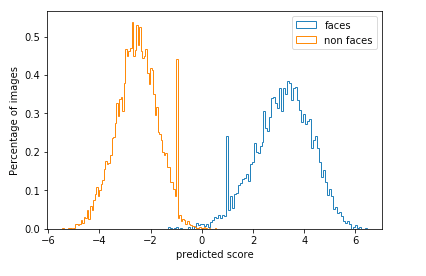
Classification result |
The HoG features of positive and negative images are as below.
|
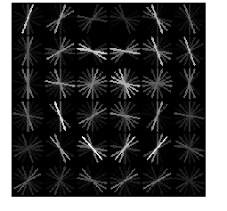
HoG feature template of positive images |
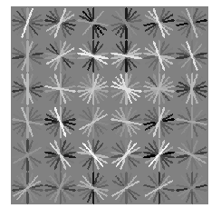
HoG feature template of negative images |
Mine hard negatives
In this part, I implemented mine_hard_negs() function which is pretty similar to get_random_negative_feature(). I also used single and multiple scales to resize the input image, and resized the images according to different scales. The only difference is that instead of returning all the features, I set a threshold for confidence in SVM, only the features with confidence that equals or is larger than the threshold are added to the feature list. In the experiment part, I will test different thresholds to obtain different accuracies.
Sliding window detection
In this part, firstly I resized the image in different scales. Then for every 36*36 size window in the resized image, I calculated the HoG features and classified with it with SVM classifier from the classification step. Then I set a threshold for the confidence. The window which has the confidence that is larger than or equals the threshold will be added to the feature list. In the HoG calculation step, the detection step size is 10. Then I used non-maximum suppresion for the windows to produce the final results.
2. Experiments and results
Single scale in sliding window detection
In this section, I set a single scale 1.0 for sliding window detection. The tunning parameters are all the default as mentioned above. (step size in getting random negative features is 15, C= 5e-2, tols=1e-5) And the threshold in sliding window is 0.9. The step size in sliding window is 5. The accuracy results are as below. The left result is for getting random negative features, and the right is for mining hard negatives.
|
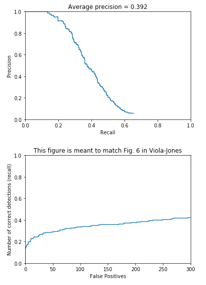
Single scale accuracy in negative images |
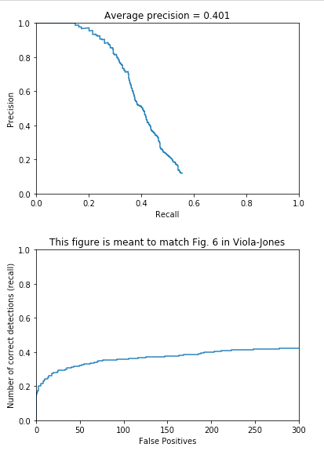
Single scale accuracy in mining hard negatives |
We can see from the results that using a single scale in sliding window detection, the accuracies are around 0.4, even using a step size as 5. And through using mining hard negatives, the accuracy improved a little from 0.392 to 0.401.
Multiple scales in sliding window detection
Then I set multiple scales in sliding window detection. I experimented with two groups of scales. The first is [1.0, 0.9, 0.8, 0.7, 0.6, 0.5, 0.4, 0.3]. And the second is [1.0, 0.9, 0.8, 0.75, 0.7, 0.65, 0.6, 0.55, 0.5, 0.45, 0.4, 0.35, 0.3, 0.25]. The tunning parameters are the same as in single scale in sliding window detection. (step size in getting random negative features is 15, C= 5e-2, tols=1e-5) And the threshold in sliding window is 0.9. The step size in sliding window is 5.
The results for the first group of scales are as below.
|
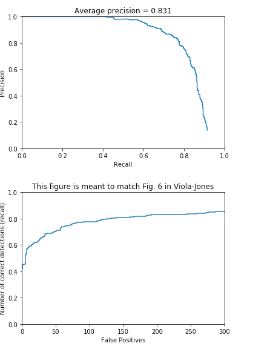
Multiple scales accuracy in negative images |
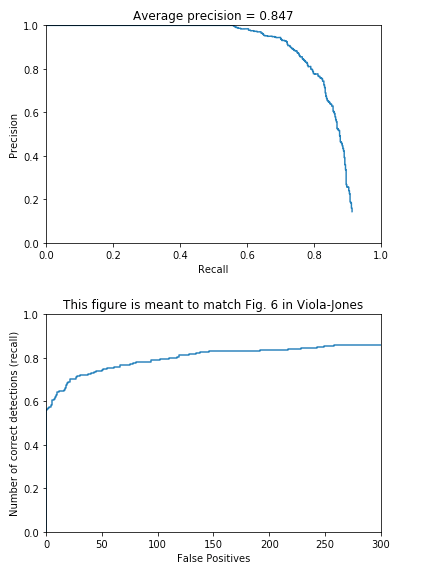
Multiple scales accuracy in mining hard negatives |
We can see that while using multiple scales, the accuracies improved a lot from around 0.4 to above 0.8 for both getting random negative features and mining hard negatives.
The results for the second group of scales are as below.
|
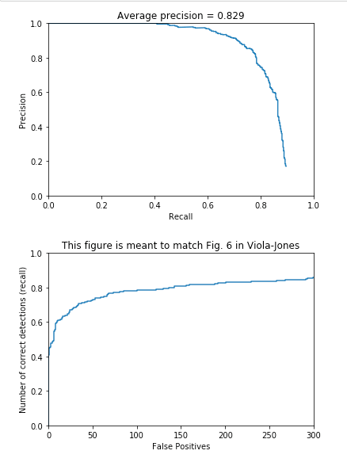
Multiple scales accuracy in negative images |
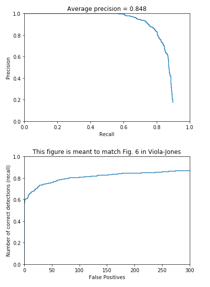
Multiple scales accuracy in mining hard negatives |
We can see that with much more scales, the accuracy improves a little from 0.847 to 0.848, which means that if we resize the image with much more scales, the accuracy will improve more.
Different step sizes in sliding window detection
In this experiment, I tested different step sizes in sliding window, with the other parameters as below. I used multiple scales of [1.0, 0.9, 0.8, 0.75, 0.7, 0.65, 0.6, 0.55, 0.5, 0.45, 0.4, 0.35, 0.3, 0.25] in sliding window, and step size in getting random negative features is 15, C= 5e-2, tols=1e-5, the threshold is 0.9. I set the step size as 15, 10, and 5. The accuracies results in mining hard negatives are as below.

Step size as 15 |
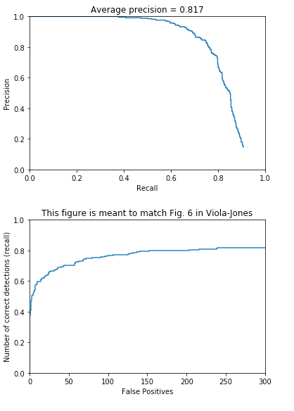
Step size as 10 |
Setp size as 5 |
In testing different step sizes, the running time increases along with the decrease of step size. However, the accuracy improves a lot from 0.708 to 0.817 to 0.848. Thus, we can conclude that step size in sliding window is very important. With smaller step size, we can obtain higher accuracy.
Different thresholds in sliding window detection
In this experiment, I tested different confidence thresholds in sliding window detection, with the other parameters as below. I used multiple scales of [1.0, 0.9, 0.8, 0.75, 0.7, 0.65, 0.6, 0.55, 0.5, 0.45, 0.4, 0.35, 0.3, 0.25] in sliding window, and step size in getting random negative features is 15, C= 5e-2, tols=1e-5, the step size is 10. I set the threshold as 1, -0.05 and -0.5. The results in mining hard negatives are as below.
|
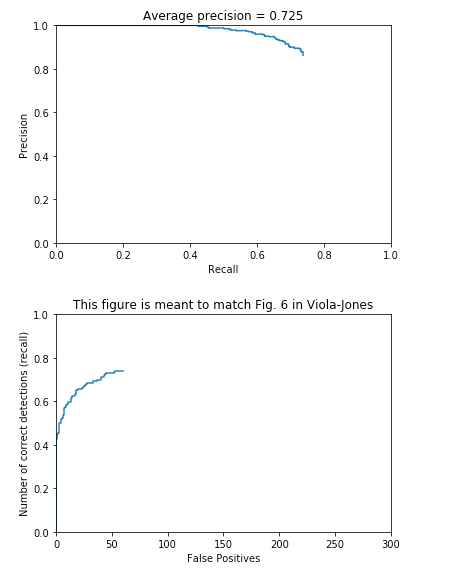
threshold = 1 |
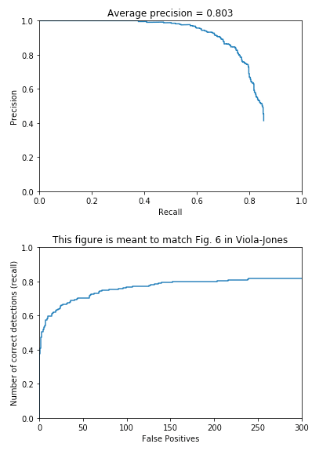
threshold = -0.05 |
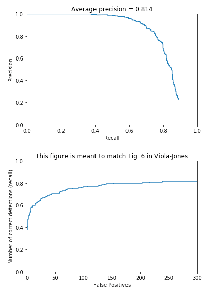
threshold = -0.5 |
We can see that with different threshold in sliding window algorithm, the accuracies are different. With the decrease of threshold, the accuracies improved.
Different C in SVM classifier
In this part, I tested different C in Linear SVM to see whether it can influence the results. I used multiple scales of [1.0, 0.9, 0.8, 0.75, 0.7, 0.65, 0.6, 0.55, 0.5, 0.45, 0.4, 0.35, 0.3, 0.25] in sliding window, and step size in getting random negative features is 15, tols = 1e-5, the step size in sliding window is 10. The threshold is -1.0. Then I tested C as 5e-4, 5e-3 and 5e-2. The results in mining hard negatives are as below.
|
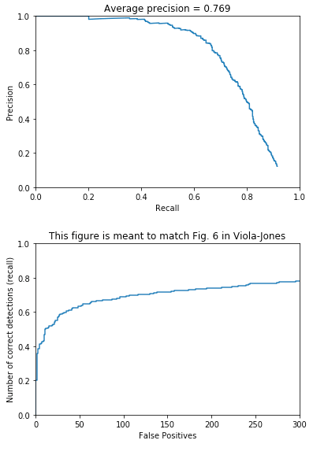
C = 5e-4 |
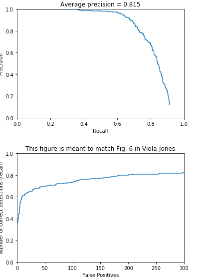
C = 5e-3 |
C = 5e-2 |
We can see that as the value of C increase, the accuracy increases. However, the results of C = 5e-3 and C = 5e-2 are similar, which means that while Cis larger than 5e-3, it converges in Linear SVM classifier, so it will not largely improve on the accuracy.
3. Extra credit
In obtaining extra credit, I used multiple scales to resize the images in the function get_random_negative_features() and mine_hard_negs(), to test whether multiple scales can improve the results.
Multiple scales in getting random negative features
I used scales [1.0, 0.95, 0.9, 0.85, 0.8, 0.75, 0.7, 0.65, 0.6, 0.55, 0.5, 0.45, 0.4, 0.35, 0.3, 0.25] in these two functions, and multiple scales of [1.0, 0.9, 0.8, 0.75, 0.7, 0.65, 0.6, 0.55, 0.5, 0.45, 0.4, 0.35, 0.3, 0.25] in sliding window, and step size in getting random negative features is 15, tols = 1e-5, C = 5e-2. the step size in sliding window is 5. The threshold is -1.0. The final result in mining hard negatives is as below.
|
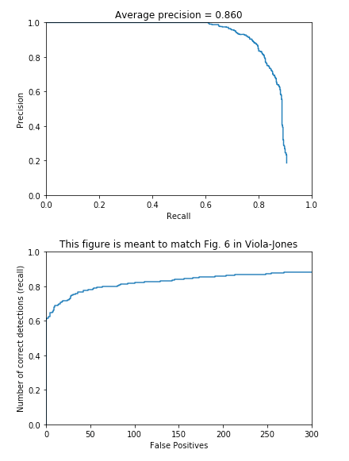
Multiple scales in gettig features in negative images |
We can see that the accuracy improves to 0.86, which shows that resizing images in getting random negative features has better performance.
3. Real face detection results on face datasets
Finally, the real face detection results using the parameters described in Extra credit implementation in some images are as below.
|
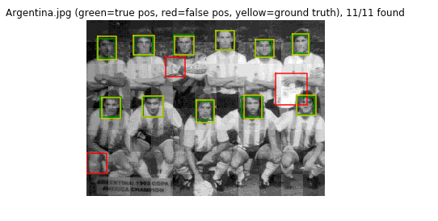
Face detection1 |
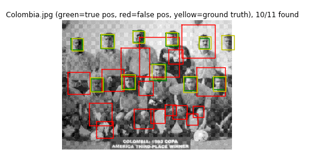
Face detection2 |
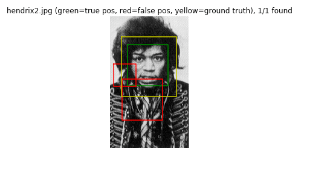
Face detetcion3 |
|
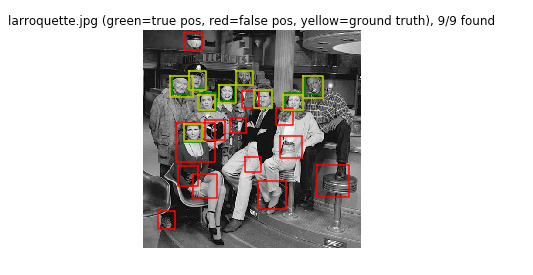
Face detection4 |
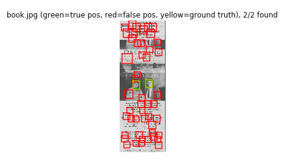
Face detection5 |
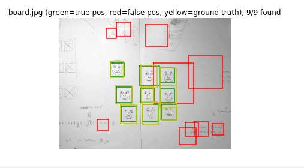
Face detetcion6 |
Some of the results of extra scenes are as below.
|
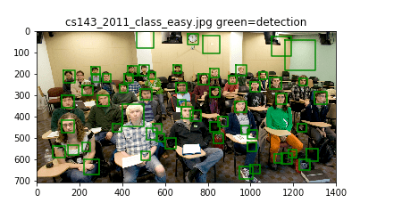
Face detection7 |
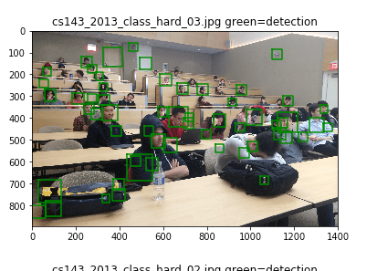
Face detection8 |
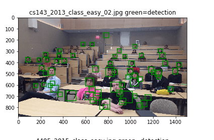
Face detetcion9 |